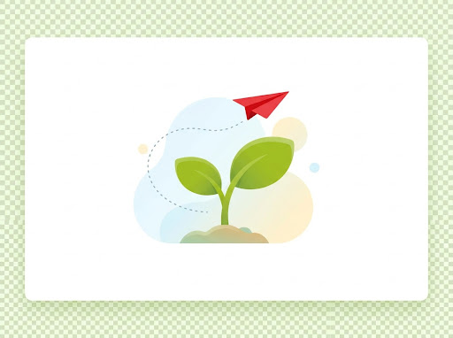
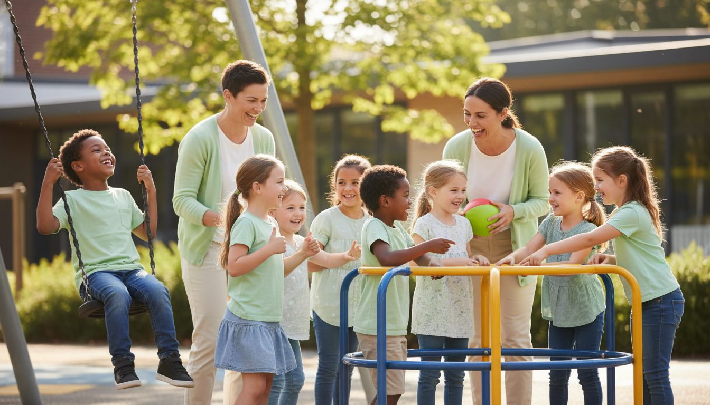

Samen laten we kinderen groeien
Alles zelf doen is optellen. Samenwerken is vermenigvuldigen. Een warme plek waar twaalf scholen hun krachten bundelen.


voor elk kind
Een netwerk van scholen met hart voor kinderen
Scholengemeenschap Groei is een samenwerkingsverband van twaalf katholieke basisscholen in Lokeren en Moerbeke-Waas: tien scholen gewoon basisonderwijs en twee scholen buitengewoon basisonderwijs.
Door duidelijke afspraken te maken en expertise te delen, versterken we elkaar, met respect voor de eigenheid van elke school. Zo maken we van elke school een warme plek waar kinderen en personeelsleden hun talenten kunnen ontplooien.
Onze scholen vormen samen één geheel
Elke school is een eigen puzzelstuk. Samen vormen ze een sterk geheel. Door samen te werken, vergroten we de kansen van elk kind en vermenigvuldigen we talent, passie en expertise.
- doneEen gedeelde visie op kwaliteitsvol onderwijs
- doneBehoud van de lokale eigenheid en de familiale sfeer
- doneSterke ondersteuning voor leerlingen én leerkrachten
Onze kernwaarden
Waar we elke dag met hart en ziel aan werken.
Warme, gastvrije scholen
We bouwen aan een familiale plek waar iedereen zich welkom voelt. Verbinding tussen kinderen, ouders en team staat centraal.
Talenten laten ontplooien
Ieder kind is uniek. We geven ruimte aan creativiteit en nieuwsgierigheid, zodat elke leerling zijn eigen weg vindt.
Samen sterker
Door expertise te delen en elkaar te ondersteunen, leggen we een sterke basis. Samenwerking is onze grootste kracht.
Wil jij ook deel uitmaken van ons team?
Ben je op zoek naar een inspirerende werkomgeving in het onderwijs? Bij Groei zet je je talenten in binnen een warme, ondersteunende gemeenschap.
Solliciteer nu